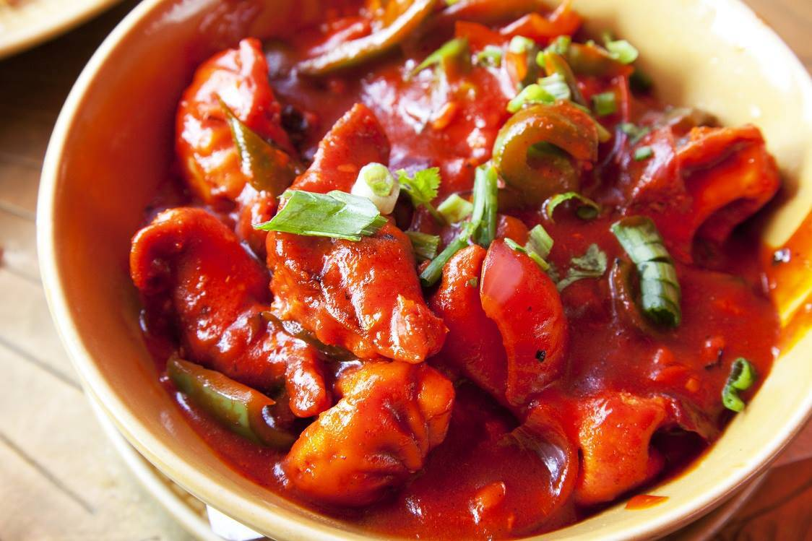
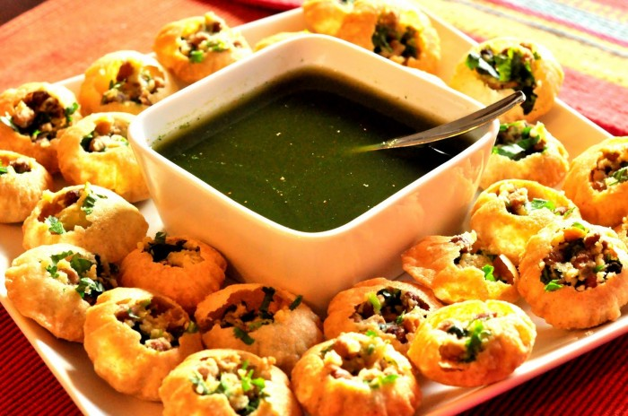
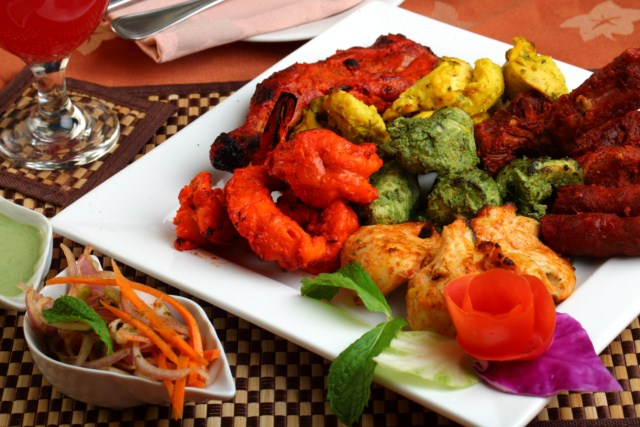
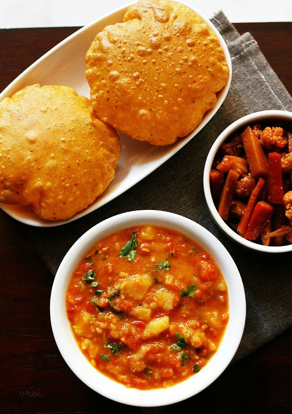

NEPALESE FAST-FOOD!





Images from left to right.
- Chilli Momo The ultimate Nepalese street food and delicacy – dumplings filled with delicately spiced meat and vegetables, generally eaten as a snack. Delicious steamed, fried or served in a soup made from fresh stock.
- Panipuri is a common street snack in several regions of the Indian subcontinent. In East Nepal, it is known as Phuchhka while in North India, it is called Golgappa, In Andhra Pradesh and Telangana its is called as Pani Puri While in Odisha it is known as GupChup . It consists of a round, hollow puri, fried crisp and filled with a mixture of flavored water (commonly known as Imli Pani), tamarind chutney, chili, chaat masala, potato, onion and chickpeas.
- Kebab is a popular dish in Nepal. Particularly, Nepalese cuisine as well as Newa cuisine and known as Sekuwa. It is a meat roasted in a natural wood/log fire in a real traditional Nepalese country style. At first while the meat is still in its raw stage is mixed with homemade natural herbs and spices and other necessary ingredients. Sekuwa could be of pork, lamb, goat or chicken, or a mixture. Sekuwa is very popular in Nepal, especially in the Eastern Nepal and Kathmandu. Tarahara, a small town in Sunsari District of Koshi State in the Eastern Nepal could be called as the sekuwa capital of Nepal.
- Puri is a deep fried sort of flat bread made of wheat flour (finely ground, known as "Maida") It is thin in texture and small in size as compared to bhature. The characteristic feature of poori is its puffiness and a perfect one is of pale golden color. It can be served with pickels, potato curry, cholle (chick peas) and various other curries.